[N-World Contents] [Book Contents] [Prev] [Next] [Index]
Animating Skeletons
This chapter gives a brief overview of animating skeletons using N-Dynamics and the Skeletal Animation System. Using skeletons and motion capture data is described in detail in the Skeletal Animation System Reference Guide and the Skeletal Animation System Tutorial.
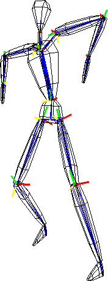
In this Chapter
You'll learn how to:
Animating a Simple Skeleton
While there are a number of ways to generate a skeleton in N·World, let's start by reading one from one of the supplied sample motion capture files.
Loading a Skeleton
Try this:
1. (CLICK-L) on GeoMenus>Open.
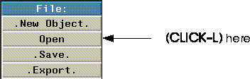
Figure 7.1 Opening a new object
- The following dialog box appears:
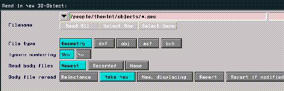
Figure 7.2 Reading in an object
2. (CLICK-L) on the "bvh" button.
- This tells N-Geometry we want to read in a BioVision object (in this case a skeleton).
3. Specify the directory that contains the motion capture file whose skeleton you want to read in.
- Specify the following directory:
/usr/local/ngc/demo/biovision/
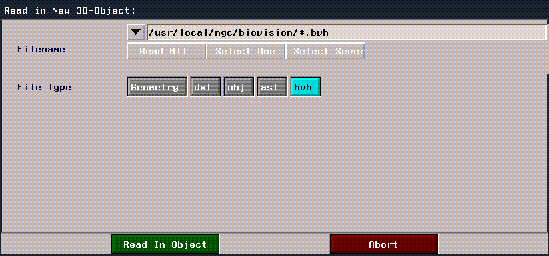
Figure 7.3 Reading in an object
4. (CLICK-L) on Select One.
- A list of motion capture files in the current directory is displayed in a list like the one shown below:
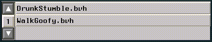
Figure 7.4 Choosing a skeleton object
- Note. N·World includes several sample motion capture files. Other motion capture files in the Acclaim file format can be found in the following directory:
/usr/local/ngc/demo/acclaim
If you want to read in a skeleton from an Acclaim format motion capture file, select the asf button in the dialog box shown in Figure 7.3.
5. (CLICK-L) on WalkGoofy.bvh.
6. (CLICK-L) on Read in Object.
- The skeleton appears as a blue-wireframe object in the Nichimen Geometry window.
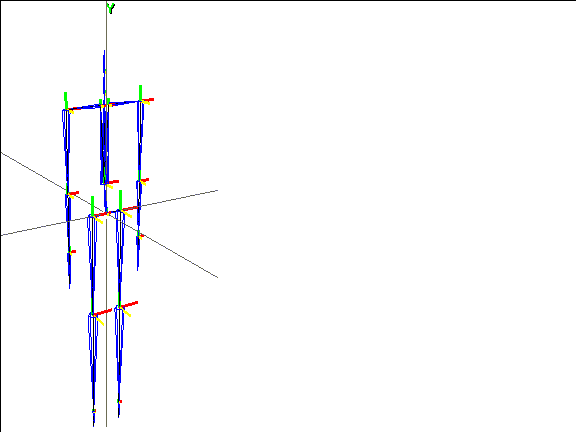
Figure 7.5 A skeleton object
This skeleton can now be modified just like any skeleton in the SAS. The next section shows how to specify which motion capture file should be used to animate the skeleton you just loaded.
Animating with Motion Capture Data
The skeleton in the Nichimen Geometry window was automatically generated by reading the header portion of the selected BioVision file. The data describing the skeletal motion refers to the actual bone names on the skeleton, and is calibrated to match that skeleton. (You can scale motion capture data from one skeleton to fit another using Nichimen's Motion Transform command, as described in the Skeletal Animation System Tutorial.)
So you can get a quick idea of how motion capture "looks" in N·World, let's animate this skeleton in N-Dynamics.
7. Open N-Dynamics.
8. Create a new script and give it 2 subchannels.
- Your script should now look something like this:
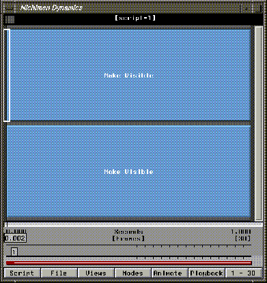
Figure 7.6 Creating a basic script
Selecting a Skeleton and Motion Capture File
To animate a skeleton using motion capture data you need to specify which skeleton you want to animate and which motion capture file should be used to animate it:
9. (CLICK-M) on the first channel.
10. (CLICK-L) on the Operation text box.
11. (CLICK-L) on Geometry>Skeleton Animation>Read Biovision Data.
- The Edit Action Properties dialog appears for the Read Biovision Data operation:
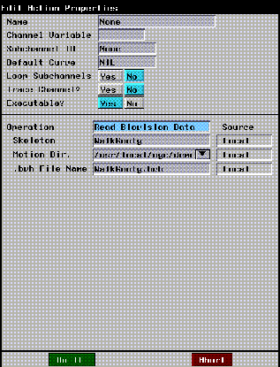
Figure 7.7 Reading Biovision data (shown with modified values)
12. (CLICK-L) on the Skeleton text box.
- A list of objects currently loaded into N-Geometry is displayed. Note that the object "WalkGoofy" appears on the list.
- Remember that our skeleton was generated from a motion capture file called "WalkGoofy.bvh"-when loading a BioVision skeleton from a motion capture file, the skeleton object is given a name that matches the motion capture file name.
13. From the list that appears, (CLICK-L) on WalkGoofy.
14. (CLICK-M) on the Motion Dir. text field.
- Specify the directory that contains the motion capture file that you'll use to animate the skeleton. For this example, enter the following directory:
/usr/local/ngc/demo/biovision
15. (CLICK-R) on the .bvh file name text box.
- A list of all the files ending in .bvh for the directory specified above are displayed.
16. (CLICK-L) on WalkGoofy.bvh.
- If the saved motion capture file is of a different length than the current script (which defaults to 30 frames), you're asked if you want to modify the script's length to match the motion:
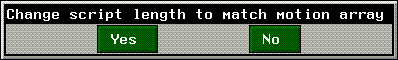
Figure 7.8 Change script length dialog
17. (CLICK-L) on Yes.
- This automatically adjusts the length of the script. The new script length appears in the bottom right corner of the script editor window.
- The dialog box should now have the same values as shown in Figure 7.7.
18. (CLICK-L) on Do It at the bottom of the Edit Action Properties dialog box.
- Note that the channel name has been changed to "Read Biovision Data."
Update the Skeleton
After selecting the skeleton and the motion capture file we want to use, we need to include an operation that tells N-Dynamics to apply the read-in motion capture data to the skeleton. We'll use the Update Skeleton operation to actually animate the skeleton.
19. (CLICK-M) on the second channel.
20. (CLICK-L) on the Operations text box.
21. (CLICK-L) on Geometry>Skeleton Animation>Update Skeleton.
- The Edit Action Properties dialog for the Update Skeleton operation appears:
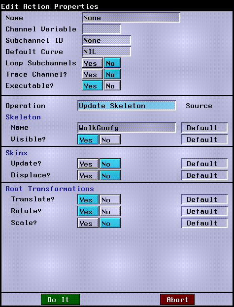
Figure 7.9 Updating a skeleton (shown with modified values)
22. In the Skeleton section, (CLICK-L) on the Name text box.
- From the object list displayed, (CLICK-L) on the skeleton you want to update in this channel. In this case, choose "WalkGoofy" again.
23. For Visible? (CLICK-L) on Yes.
- This makes the skeleton visible.
24. In the Skins section, set Update? and Displace? to No.
- If you set this to Yes, any skins attached to the object are animated too. Right now, however, the skeleton has no attached skins.
25. In the Root Transformations section, set Translate? and Rotate? to Yes, but Scale? to No.
- These parameters specify whether any translation, rotation, or scaling data in the motion capture file are applied to the skeleton when updating it. The use of these parameters is discussed in more detail in the Skeletal Animation System Reference Guide.
26. (CLICK-L) on Do It at the bottom of the Edit Action Properties dialog box.
- Note that the channel name changes to "WalkGoofy Update Skeleton:"
Your basic script should now look like this:
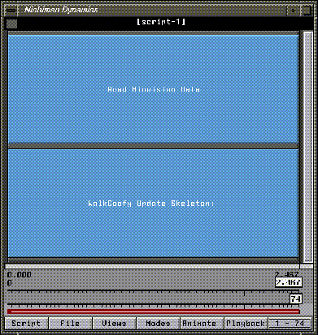
Figure 7.10 Modified basic script
Doing a Test Animation
Next, let's see what the motion looks like.
27. Animate and playback the script.
28. (CLICK-L) on the Playback button.
- If your camera is using the initial camera view, you probably saw the bottom portion of your skeleton moving through the N-Geometry window, (as shown in Figure 7.11).
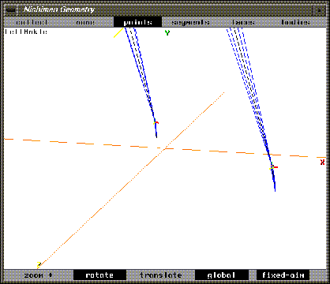
Figure 7.11 A test animation
- To make sure you see the entire captured motion, let's adjust the camera.
29. (CLICK-M) on the Nichimen Geometry window, adjusting the camera's angle and its distance from the skeleton.
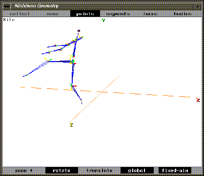
Figure 7.12 Improving the view angle
30. (CLICK-L) on Animate again.
- This time, you should be able to see the skeleton's entire motion sequence.
31. (CLICK-L) on Playback again.
- A new black-and-white preview of your animation plays back in real time. If you like the camera angle, you can save it as part of your script by adding a new channel to control the camera position.
32. (CLICK-R) on the black title bar of the script editor window.
33. (CLICK-L) on Add.
34. (CLICK-L) on Add One.
35. (CLICK-M) on the New Subchannel.
36. (CLICK-L) on the Operation text box.
37. (CLICK-L) on Camera.
38. (CLICK-L) on Set View.
39. Next to the Viewer parameter, (CLICK-L) on Source and choose Local from the list that appears.
- The camera's current position appears in the Viewer text edit box.
40. (CLICK-L) on the text box next to Viewer.
- From the list that appears, choose Select Current Geo View.
41. (CLICK-L) on Do It to save the camera's position.
Reorder the Channels in the Script
The last thing we need to do is rearrange the channels so that the camera is adjusted at the beginning of each frame. To reorder the subchannels:
42. (CLICK-R) on the black title bar for the script.
43. (CLICK-L) on Reorder Subchannels.
- The following dialog box appears:
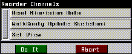
Figure 7.13 Reordering subchannels
44. (DRAG-L) the Set View operation to the top of the list.
Now, you can execute the script even if the camera has been moved.
45. Animate and playback the script again.
Adding Some Skin Objects
This section shows you how the skeleton can be used to drive an object (or objects). Try the following:
1. (CLICK-L) on bodies in the N-Geometry menu.
2. (SHIFT-L) on the skeleton, then (CLICK-L) on Make Attached Objects.
- Select Yes when prompted, and individual objects are created around and attached to each bone on the skeleton:
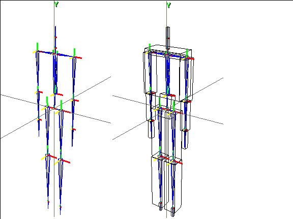
Figure 7.14 Left, original skeleton; right, with attached objects
3. (CLICK-M) on the Update Skeleton channel and set Skins>Update to Yes.
- This animates any attached skins or objects as the skeleton is animated.
4. Animate and playback the animation again.
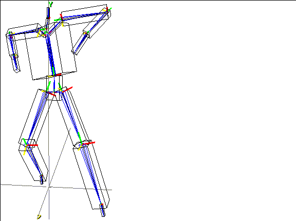
Figure 7.15 Animating with attached skins
You can modify the shapes of the attached objects using any of the tools in N-Geometry. This is a handy technique for quickly building a character that would translate well onto any game platform.
For example, you could scale the ends of the attached objects, then use N-Geometry's Smooth command to create a much more life-like character in only a few seconds:
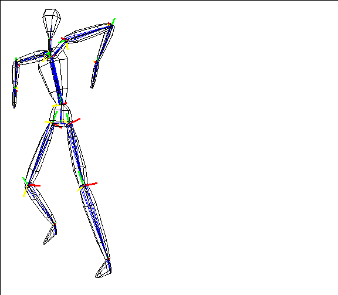
Figure 7.16 Modified attached objects
Congratulations!
You've now gone through a very basic lesson in loading a skeleton and animating it using motion capture data. You've used the Make Attached Objects command to quickly add some skins to your object, and animated the entire sequence.
Attaching single skin models to a skeleton is discussed in more detail in the Skeletal Animation System Tutorial; however, once a skin is attached the process for animating is essentially the same.
[N-World Contents] [Book Contents] [Prev] [Next] [Index]
 Another fine product from Nichimen documentation!
Another fine product from Nichimen documentation!
Copyright © 1996, Nichimen Graphics Corporation. All rights
reserved.